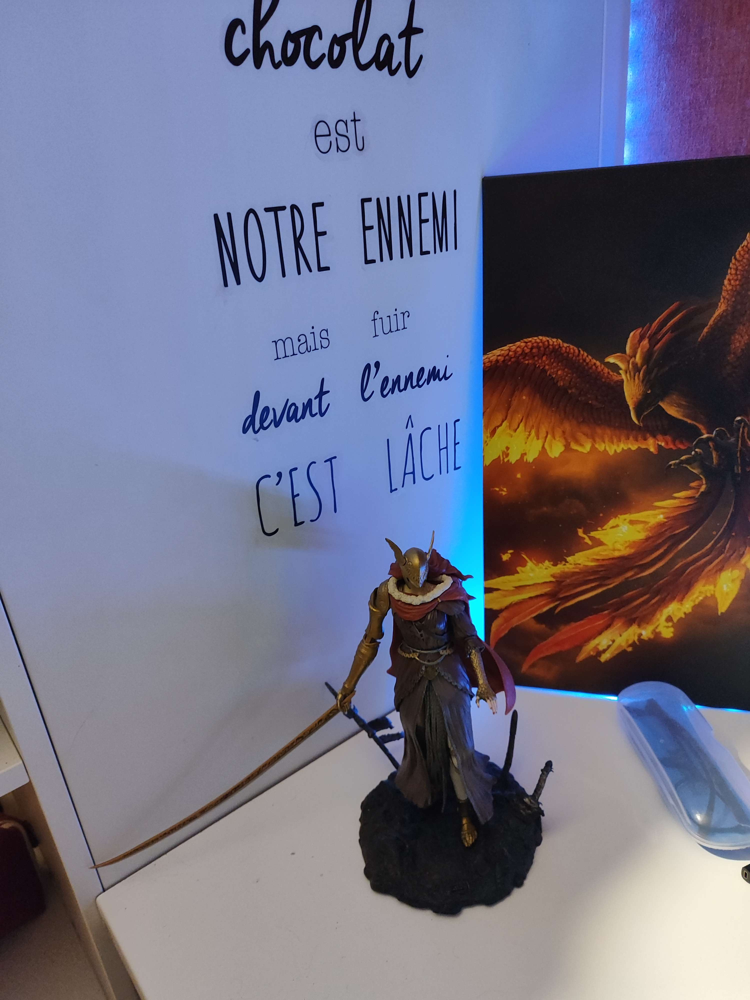
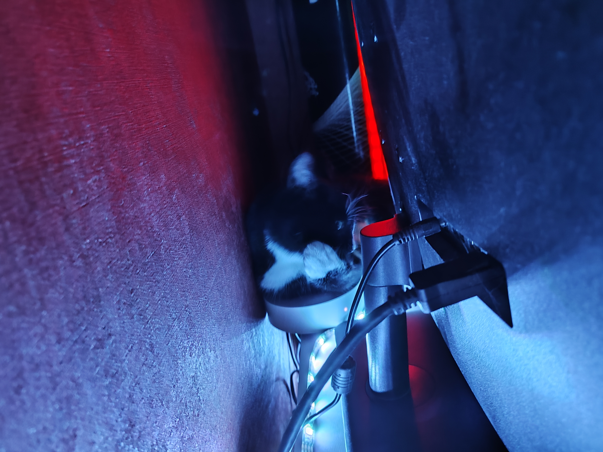
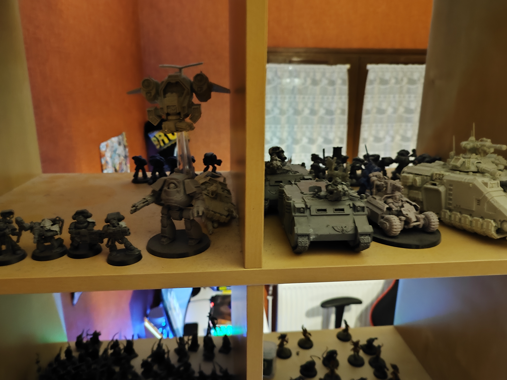
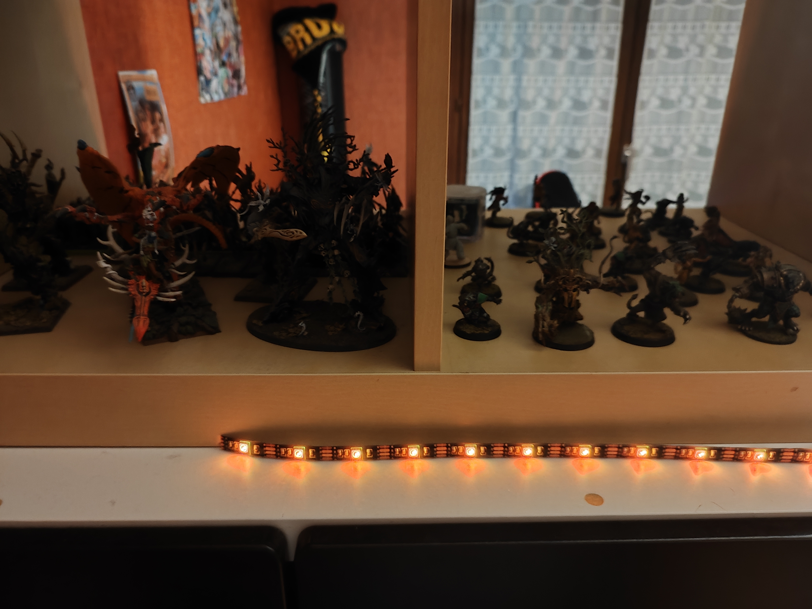
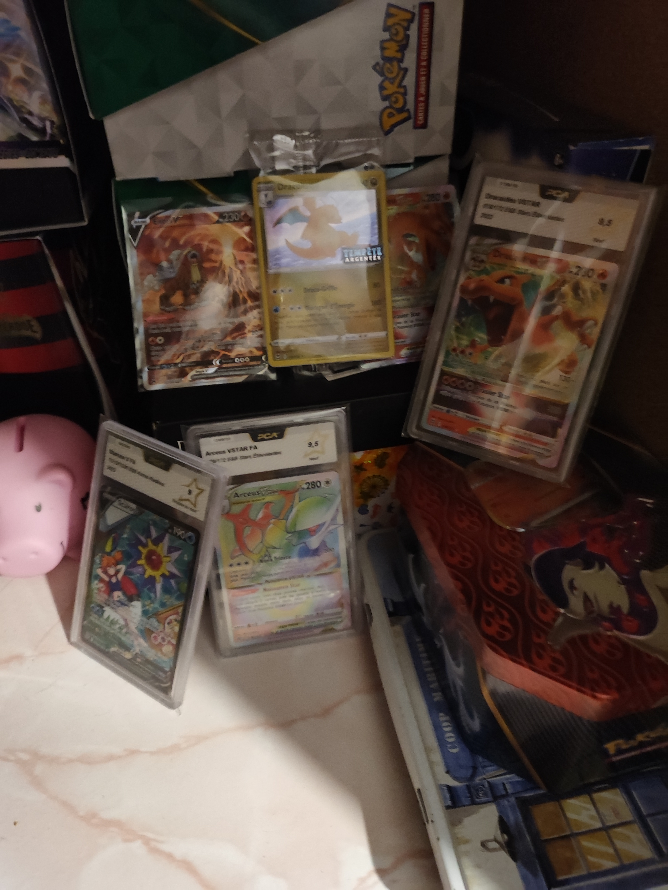
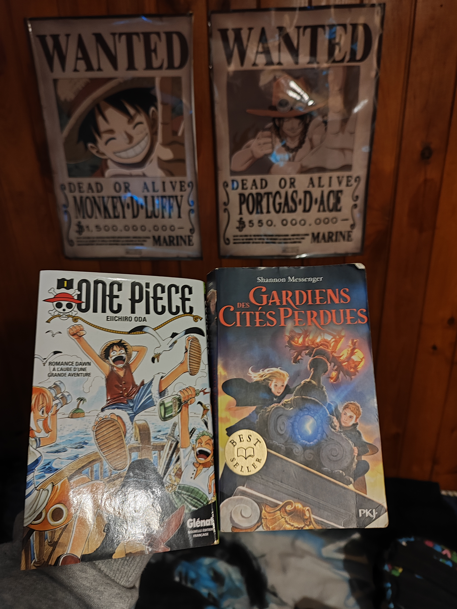
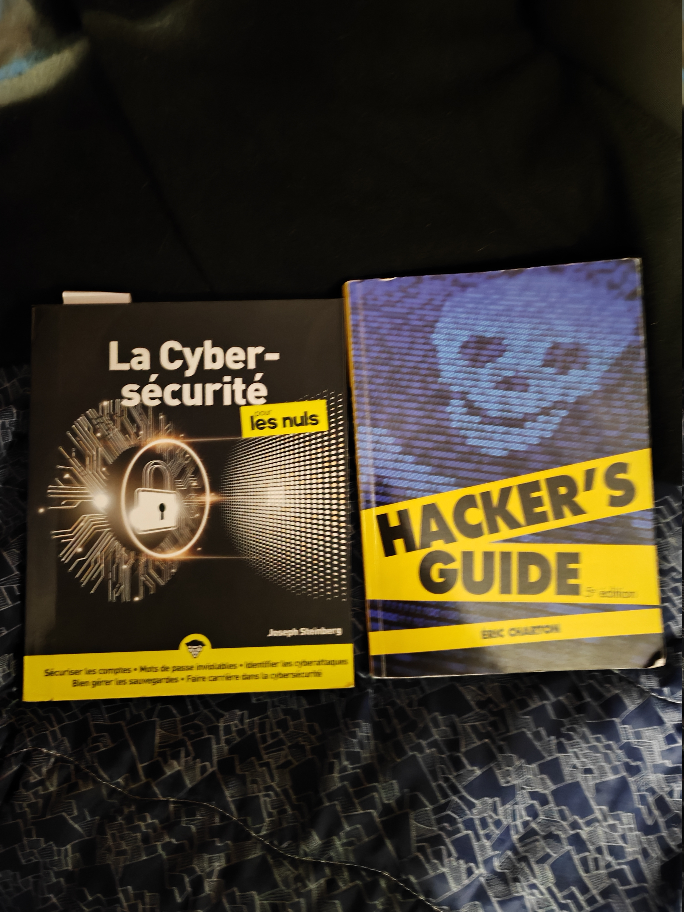
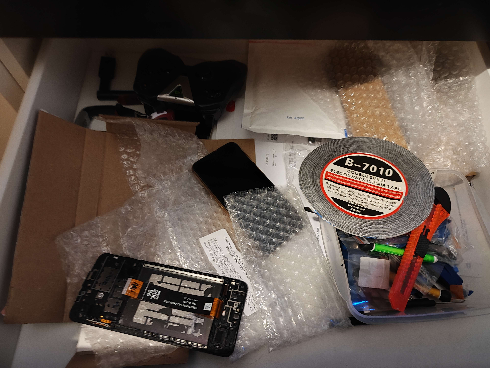

Les jeux vidéos: Je joue au jeu vidéo depuis ma plus tendre enfance avec comme jeu qui m'a bien marqué : MW3 (je jouais avec mes frères.).
Sinon mon jeu préféré du moment c'est Elden ring: pour preuve, j'ai la figurine de Malénia le boss le plus dur du jeu.
Note : petite citation pour se rappeler des vrais objectifs.


Chat numéro 2: Voici Choupette: Une filoute qui aime bien s'incruster dans ma chambre pendant que je joue.

La pêche: Voici une photo de mon frère et moi avec un poisson chat. Je pêche généralement quand j'ai le temps.


warhammer: Mon père nous a appris à mon frère et à moi à jouer à warhammer (elfes sylvains), warhammer 40k (blood angels) et bloodbawl (elfes sylvains et skavens)

pokemon: Avec mes frères nous nous intéressons aux cartes pokemons. Mon grand frère a créer une entreprise autour de la revente de cartes pokemons. Moi j'en fais juste la collection.


Un peu de lecture: J'aime beaucoup lire donc voici ma série de livre préférée "Gardien des cités perdues", mon manga préféré "One piece".
Je lis aussi beaucoup de livres sur la cybersécurité, car cela me passionne et j'aimerais en faire mon travail plus tard.

éléctronique: A force de casser mes objets éléctronique, j'ai finis par apprendre à les réparers.